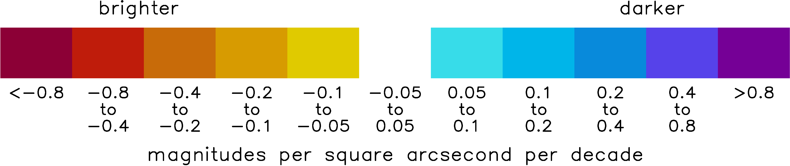

Light Pollution Trends (2013-2024)
This map shows the trends in light pollution over the years 2013-2024. The red/orange colors mean that light pollution is increasing (change in magnitude is negative) and the blue colors mean that light pollution is decreasing (change in magnitude is positive). White means either no trend or the trend is not statistically significant (i.e. trend is not consistently positive or negative and therefore likely not real). The Theil-Sen trend estimation method was used to calculate trends from the annual composites for each year from 2013-2024. The (two-sided) Mann-Kendall Test for a monotonic trend was used to assess statistical significance (90% confidence level).
For more information contact:
David Lorenz
dlorenz@wisc.edu